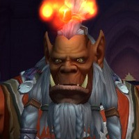
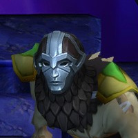
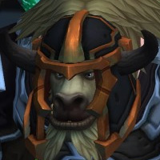

We're Recycled Content Just like World of Warcraft!
We are a progression focused guild on Bleeding Hollow US. We consider ourselves in the realm of "hardcore-casual" because we only raid a couple of nights a week but we expect our team to come prepared to slay dragons.
Open Slots
These are our currently open positions. We prefer that all DPS are flexible in their damage-dealing specs, especially on a boss by boss basis. Tanks and Heals should also feel comfortable as DPS.
You're also welcome to talk to us if your class isn't listed below - we're flexible!
If you're any of these specs, hit us up on Discord!
 Brewmaster
Brewmaster- Mistweaver
 Holy
Holy Affliction
Affliction Hunter
Hunter Warrior
Warrior
Raid Details
- Two nights per week - Tuesday & Wednesday
- We raid from 8 PM Eastern until 11 PM Eastern.
- If we're close on a boss, we'll go slightly over our usual raid time to get more pulls in.
- We take a 10 minute break in the middle of raid.
Expectations
- Show up 10 to 15 minutes before raid. We pull at 8.
- Come fully enchanted with all consumables required for the raid.
- Have Deadly Boss Mods and Exorsus Raid Tools installed into your addons folder.
- You will let an officer know if you are unable to make a raid, will be late to a raid, or need to leave early.
- You'll run content when we aren't raiding to improve your gear where possible.
- Get in that weekly Mythic +10 Keystone!
Loot
- If you get an item and its an upgrade, awesome, keep it!
- If the item is not an upgrade, it needs to be offered to the guild.
- Let the Guild Master (Fluxflashor) know that the item is not an upgrade for you.
- The Guild Master will ask people in the raid to roll for main spec followed by off spec for the item. Keep discord clear.
- Bind on Equip items should be traded to the Guild Master. This is how we fund our repairs, flasks, and feasts.
Ready For Raiding
We don't ask you to bring much, but this is the bare minimum everyone is expected to have.
 60 BFA PotionsPrepot on pull and during lust. Don't be Scyndek, that's bad.
60 BFA PotionsPrepot on pull and during lust. Don't be Scyndek, that's bad. 60 BFA Health PotionsNo shared cooldown with those delicious Lock Rocks™. Chug em!
60 BFA Health PotionsNo shared cooldown with those delicious Lock Rocks™. Chug em! 1 Vantus RuneBecause sometime bosses suck and you need that extra boost.
1 Vantus RuneBecause sometime bosses suck and you need that extra boost. A Sense of HumorWe're bound to have a giggle.
A Sense of HumorWe're bound to have a giggle.
Get Duffd.
Find Us
Hit us up on Discord if you're interested in joining (#recruitment) or see what we're doing elsewhere.
Guild Leadership
The people you want to contact. All recruitment questions can go to Flux.
- FluxflashorGuild MasterRecruitment and Loot Specialist
- ClannikClown BoiNo seriously, he's a walking clown fiesta during the Trial of Style.
- RestomolsterRaid LeadWatch where he keeps his branch - he'll poke you.